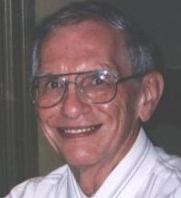
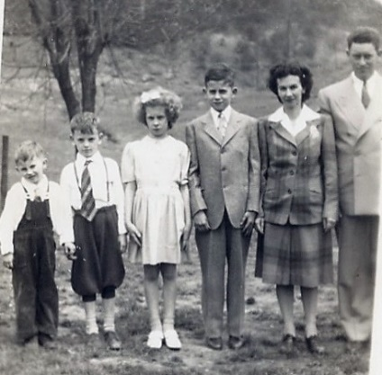
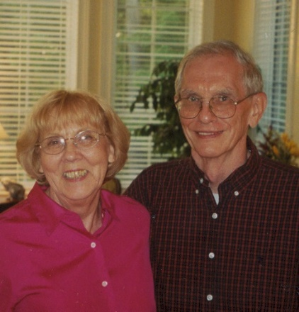

Clifford Earl Shamblen
Born 27 January 1938, Fairplain, West Virginia
Quick Facts
Immediate Family
Parents
- Arvel Lawrence Shamblin (1909–2001)
- Georgia Mae Fisher (1909–1988)
Spouses
- Lois Geraldine Barnes (17 March 1938 – 9 March 2011; married 26 July 1958)
- Marjorie Farmer Pilman (23 August 1932 – 23 February 2020; married 2011)
Children
- Sandra Sue Metzgar (born 30 June 1959)
- Sharon Lee Feltner (born 29 August 1960)
- Stephen Richard Shamblen (born 6 February 1972)
- Michael Pilman (stepchild)
- Kimberly Burrous (stepchild; died 2020)
Siblings
- Lawrence Richard Shamblen (1932–1968)
- Betty Carolyn Shircliff (born 1934)
- Lowell Harold Shamblen (born 1935)
On Family Tree Sites
Couple Folder
Life Timeline
1938 · age 0
Born, Fairplain, Jackson Co., WV
1953–56 · age 15–18
West Charleston schools
1956–65 · age 18–27
University of Cincinnati (Co-Op, then Evening College)
1958 · age 20
Married Lois Geraldine Barnes, Cincinnati
1959 · age 21
Daughter Sandra born, Cincinnati
1960 · age 22
Daughter Sharon born, Cincinnati
1966–70 · age 28–32
University of Cincinnati, MS Engineering
1972 · age 34
Son Stephen born, Cincinnati
2011 · age 73
Married Marjorie Farmer Pilman, Cincinnati
Life Story
Clifford Earl Shamblen was born January 27, 1938, in Fairplain, Jackson County, West Virginia, the youngest child of Arvel Lawrence Shamblen and Georgia Mae Fisher. He grew up in Fairplain, then Sissonsville and Charleston, and went to school in West Charleston.
He spent two years in the University of Cincinnati Co-Op program, then earned his BS in Metallurgical Engineering in 1965 and his MS in Engineering in 1970 through UC Evening College. He worked at Metcut Research, then at GE Aircraft Engines, where he was an engineer, briefly a manager, and then a project manager. His work was nickel and titanium alloy development; he became GE's titanium expert, helped develop and introduce the hearth melt process, helped form the international Jet Engine Titanium Quality Committee, and coauthored many GE patents, mostly on titanium.
He married Lois Geraldine Barnes — "Gerry" — on July 26, 1958, in Cincinnati; his brother Richard was best man. Their children were Sandra, Sharon, and Stephen. After Lois died in 2011, he married Marjorie Farmer Pilman — "Marge" — in 2011 in Cincinnati. He retired from GE and still gets titanium calls.
Cliff would one day write it all down — and he did. His autobiography is linked below.
Cliff's Autobiography
Clifford Earl Shamblen wrote his own life story. Read it in his own words: Clifford Earl Shamblen — My Autobiography (original).
Photo Gallery





Sources and Evidence
- Geni, read 2026-11-03: Clifford Earl Shamblen profile, including his own About account of his schooling and GE career, spouses, children, and stepchildren
- FamilySearch, read 2026-11-03: Clifford Shamblen, PN3J-R3R, birth 27 January 1938, Fairplain
- WikiTree: Clifford Shamblin-436, son of Arvel Shamblin-435 and Georgia Fisher-24678
- Ancestry, the ’s Brewster Family Tree: Clifford Earl Shamblen, 162817238029
- 1940 census, Ripley District, Jackson County, West Virginia (household of Arvel and Georgia)
- Clifford Earl Shamblen, My Autobiography (original)
- Lawrence × Ruth couple profile: Richard was best man at Cliff and Gerry's wedding, June 1958
Research Notes and Open Questions
Additional Quick-Fact Details
- Education: BS Metallurgical Engineering, 1965; MS Engineering, 1970, University of Cincinnati
- Career: GE Aircraft Engines — titanium expert
- FamilySearch heads the profile only "Clifford Shamblen" — "Earl" is not shown as a middle name in the name field there.
- FamilySearch shows Clifford as Living with no spouse or children listed; the living flags and the empty spouse/child fields were left untouched, and no death is inferred.
- Marjorie Farmer Pilman was also the wife of Thomas Charles Pilman, per Geni.
DNA
No DNA matches linked yet.
Family Notes
No family-notes link is listed on this profile.
Profile history: Created 3 November 2026 from Geni, Ancestry, WikiTree, and FamilySearch profiles and family notes.